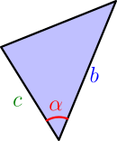
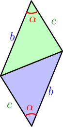
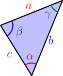
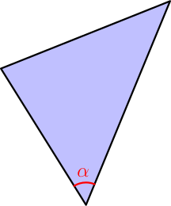
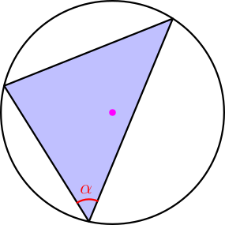
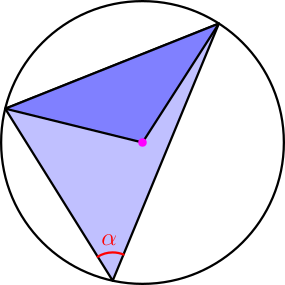
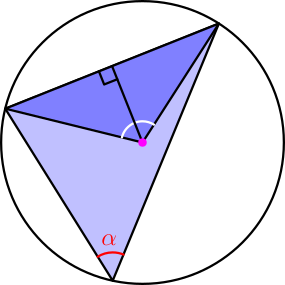
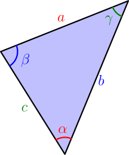

Law of Sines¶
We know how $\sin$, $\cos$ and $\tan$ work in a triangle that has a 90 degree corner (TODO), but the results of this derivation work for any triangle.
Let $\alpha$ be any angle of any triangle, and let $b$ and $c$ denote the sides not opposite to $\alpha$.

Let's make a green copy of the triangle, rotate the copy by 180 degrees, and then move it so that the sides opposite to $\alpha$ match.

The opposite sides of the created 4-gon have the same lengths, so it is a parallelogram. By the parallelogram area formula (TODO), its area is $bc\sin(\alpha)$, because $\alpha$ is an angle of the parallelogram and $b$ and $c$ are the different sides. The parallelogram is made of two copies of the same triangle, so the area of the triangle is $$ \text{triangle area} = \frac{bc\sin(\alpha)}{2}. $$ Let $a$ be the side opposite to $\alpha$, and let $\beta$ and $\gamma$ be the angles opposite to $b$ and $c$.

By doing the above calculation with $\beta$ instead of $\alpha$, we get $$ \text{triangle area} = \frac{ac\sin(\beta)}{2}, $$ and with $\gamma$ we get $$ \text{triangle area} = \frac{ab\sin(\gamma)}{2}. $$ By setting all the different ways to write the triangle area equal, we get $$ \frac{bc\sin(\alpha)}{2} = \frac{ac\sin(\beta)}{2} = \frac{ab\sin(\gamma)}{2}. $$ Multiplying everything by $2$ and dividing by $abc$ gives $$ \frac{\sin(\alpha)}{a} = \frac{\sin(\beta)}{b} = \frac{\sin(\gamma)}{c}. $$ Finally, we rewrite this slightly to get what is typically presented in text books. By raising all sides to power $-1$, we get $$ \left( \frac{\sin(\alpha)}{a} \right)^{-1} = \left( \frac{\sin(\beta)}{b} \right)^{-1} = \left( \frac{\sin(\gamma)}{c} \right)^{-1}, $$ and because power $-1$ flips a fraction around, we have $$ \frac{a}{\sin(\alpha)} = \frac{b}{\sin(\beta)} = \frac{c}{\sin(\gamma)}. $$
Let $a$, $b$ and $c$ be the side lengths of any triangle, and let $\alpha$, $\beta$ and $\gamma$ be the angles opposite to those sides. Then $$ \frac{a}{\sin(\alpha)} = \frac{b}{\sin(\beta)} = \frac{c}{\sin(\gamma)}. $$ This is known as law of sines.
So, the number that we get by dividing a side length with $\sin(\text{opposite angle})$ doesn't depend on which side and angle we choose. It depends only on the triangle being used. Next we'll derive the law of sines again in a different way that also gives a satisfying explanation for what that number is.
Different derivation¶
Again, consider any angle of any triangle.

Let's place a circle around the triangle so that the circle touches each corner of the triangle. The pink dot in the middle is the center of this circle.

Let's draw lines from the center of the circle to other corners of the triangle:

We find a new triangle that I have colored with darker blue. Let's draw a line from the circle center perpendicularly to the opposite side. This splits an angle of the dark-blue triangle into two smaller angles that I'm drawing with white.

The dark-blue triangle has two sides whose length is the radius of the circle. That's why it's symmetric along the line we drew. By that symmetry, the white angles are equal. By the inscribed angle theorem, the two white angles together are $2\alpha$, so the white angles are also $\alpha$:
Let $a$ denote the opposite side of the angle $\alpha$ in the big triangle. By the symmetry of the triangle, the 90 degree line we drew splits the $a$ side into two equally long pieces.
By calculating $\sin(\alpha)$ with either one of the 90 degree triangles, we get $$ \sin(\alpha) = \frac{\text{opposite}}{\text{hypotenuse}} = \frac{a/2}{R}, $$ where $R$ denotes the radius of the circle. If we multiply both sides by $2R$ and divide by $\sin(\alpha)$, we get $$ 2R = \frac{a}{\sin(\alpha)}. $$
Let $\beta$ and $\gamma$ be other angles of the triangle, and let $b$ and $c$ be their opposite sides.

By applying the above result for $\beta$ and $\gamma$, we get $$ \frac{b}{\sin(\beta)} = 2R, \quad \frac{c}{\sin(\gamma)} = 2R. $$ We got the law of sines again, but with an extra $2R$ at the end.
Let $a$, $b$ and $c$ be the side lengths of any triangle, and let $\alpha$, $\beta$ and $\gamma$ be the angles opposite to those sides. Then $$ \frac{a}{\sin(\alpha)} = \frac{b}{\sin(\beta)} = \frac{c}{\sin(\gamma)} = 2R, $$ where $2R$ is the diameter of a circle touching all corners of the triangle.